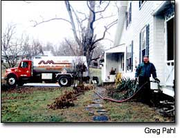

Greg Liebert, president of Vermont's Alternative Energy Corporation (VAEC), stands next to the first tank car-load of biodiesel his company brought to Vermont. VAEC partners with large oil companies to bring biodiesel to Vermont for residential home-heating.